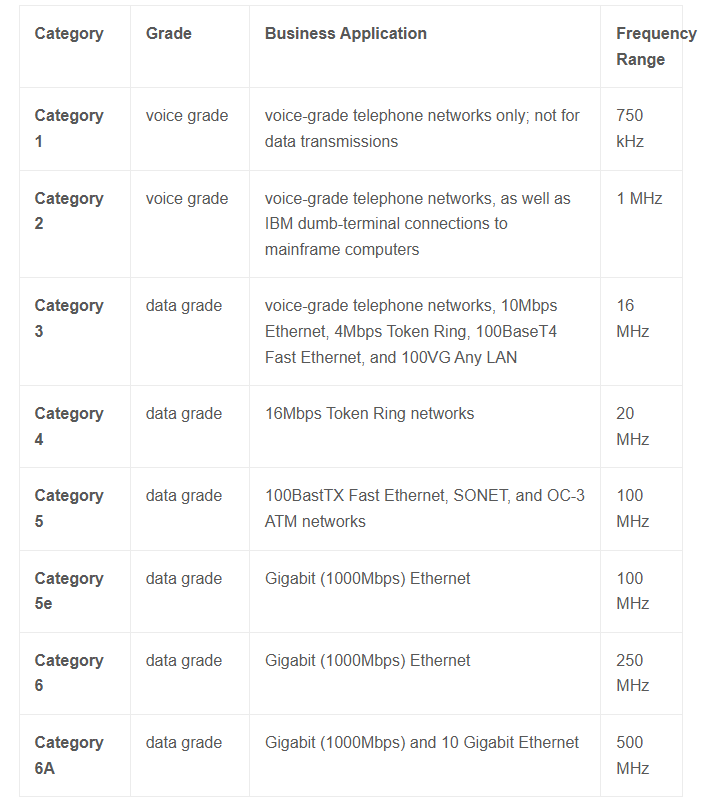

📡 Mezzi Trasmissivi
Dai cavi in rame alle fibre ottiche: il viaggio fisico dei dati
🔗 Collegamenti con il corso:
Questa pagina è fondamentale per TPSEE (10 ore su fibre ottiche) e completa la comprensione del Livello Fisico (ISO/OSI) e Livello Accesso Rete (TCP/IP).
📚 Parte Fondamentale per TPSEE
Questa sezione copre circa 10 ore di lezione nel corso TPSEE. Dalla teoria base alla progettazione di reti in fibra.
🎯 Cos'è una Fibra Ottica?
Una fibra ottica è un mezzo trasmissivo in vetro o plastica che utilizza la riflessione totale interna per guidare la luce (e quindi i dati) per lunghe distanze con perdite minime.
🌐 Leggi su FiberOptics4Sale.com
📊 Struttura di una Fibra Ottica

1. Core (Nucleo): Vetro ultra-puro (diametro: 8-62.5µm) - qui viaggia la luce
2. Cladding (Mantello): Vetro con indice di rifrazione inferiore - riflette la luce nel core
3. Coating (Rivestimento): Protezione in plastica (250-900µm)
4. Strengthening Fibers: Fibre di rinforzo in kevlar
5. Outer Jacket (Guaina): Protezione meccanica esterna
🔵 Fibre Monomodali (SMF)
- Core sottile: 8-10 µm
- Una sola modalità: Meno dispersione
- Distanze lunghe: Fino a 100+ km
- Laser source: Costo maggiore
- Uso: Telecomunicazioni, backbone
🟢 Fibre Multimodali (MMF)
- Core largo: 50-62.5 µm
- Multiple modalità: Maggiore dispersione
- Distanze corte: Fino a 2 km
- LED source: Costo minore
- Uso: Reti LAN, datacenter
📈 Standard e Tecnologie
| Standard |
Velocità |
Distanza |
Applicazione |
Anno |
| 10BASE-FL |
10 Mbps |
2 km |
Ethernet base |
1993 |
| 100BASE-FX |
100 Mbps |
2 km |
Fast Ethernet |
1995 |
| 1000BASE-SX |
1 Gbps |
550 m |
Gigabit (MMF) |
1998 |
| 1000BASE-LX |
1 Gbps |
5 km |
Gigabit (SMF) |
1998 |
| 10GBASE-SR |
10 Gbps |
400 m |
10GbE (MMF) |
2002 |
| 100GBASE-LR4 |
100 Gbps |
10 km |
Backbone |
2010 |
| 400GBASE-DR4 |
400 Gbps |
500 m |
Datacenter |
2017 |
🔧 Connessioni e Connettori
🔘 ST (Straight Tip)
Inserimento e rotazione, meccanismo a baionetta. Usato in impianti datacom.
🔘 SC (Subscriber Connector)
Push-pull, duplex per Tx/Rx. Standard per reti enterprise.
🔘 LC (Lucent Connector)
Piccolo formato, latch. Standard attuale per alte densità.
🔘 FC (Ferrule Connector)
Filettato, alta precisione. Usato in strumentazione e laboratori.
⚠️ Considerazioni TPSEE (Sicurezza)
- Non guardare MAI in una fibra attiva! Il laser può danneggiare permanentemente la retina
- Usare sempre power meter prima della connessione
- Smaltimento corretto delle fibre tagliate (vetro affilato)
- Test di continuity e attenuazione con OTDR

Categorie UTP - Confronto
Da Cat 3 a Cat 8: specifiche e differenze
📍 Immagine locale: CategorieUTP.png
🎯 Cos'è il Doppino Intrecciato?
Il doppino intrecciato non schermato (UTP) è il cavo più comune nelle reti LAN. Consiste di 4 coppie di fili di rame intrecciati per ridurre le interferenze elettromagnetiche.
🔌 Pinout RJ45 - Standard T568B

📋 Sequenza T568B (da sinistra a destra):
Pin 1: Bianco-Arancio (TX+)
Pin 2: Arancione (TX-)
Pin 3: Bianco-Verde (RX+)
Pin 4: Blu
Pin 5: Bianco-Blu
Pin 6: Verde (RX-)
Pin 7: Bianco-Marrone
Pin 8: Marrone
📊 Categorie UTP - Riepilogo Visivo
🔍 Legenda Immagine Categorie UTP:
Cat 5e: Standard per Gigabit Ethernet (1 Gbps)
Cat 6: 10 Gbps fino a 55 metri
Cat 6A: 10 Gbps fino a 100 metri
Cat 7: Schermato, 10 Gbps, 600 MHz
Cat 8: 40 Gbps fino a 30 metri
Bandwidth: Frequenza massima supportata
📊 Tabella Dettagliata Categorie UTP
| Categoria |
Banda |
Velocità Max |
Distanza Max |
Uso Tipico |
Anno |
| Cat 3 |
16 MHz |
10 Mbps |
100 m |
Telefonia/Voce |
1991 |
| Cat 5 |
100 MHz |
100 Mbps |
100 m |
Fast Ethernet |
1995 |
| Cat 5e |
100 MHz |
1 Gbps |
100 m |
Gigabit Ethernet |
2001 |
| Cat 6 |
250 MHz |
10 Gbps |
55 m |
10GbE limitato |
2002 |
| Cat 6A |
500 MHz |
10 Gbps |
100 m |
10GbE full |
2008 |
| Cat 7 |
600 MHz |
10 Gbps |
100 m |
Datacenter |
2010 |
| Cat 8 |
2000 MHz |
40 Gbps |
30 m |
Datacenter 40GbE |
2016 |
🔌 Connettore RJ45 - T568A vs T568B
L'RJ45 (Registered Jack 45) è il connettore standard per Ethernet.
Differenze principali:
- T568A: Standard governativo/generale (verde/bianco-verde su pin 1-2)
- T568B: Standard AT&T/commerciale (arancione/bianco-arancione su pin 1-2)
- Importante: Scegliere uno standard e mantenerlo in tutta l'installazione!
🔧 Cablaggio consigliato per TPSEE:
Usare sempre T568B per coerenza con le installazioni commerciali.
Attenzione: Per cavi crossover (ormai rari) invertire le coppie 2-3 e 1-6.
🎯 HUB vs SWITCH vs ROUTER
🔘 HUB (livello 1): Ripete tutto a tutti - collisioni - OBSOLETO
🔘 SWITCH (livello 2): Impara MAC address - switching intelligente
🔘 ROUTER (livello 3): Instrada tra reti diverse - usa indirizzi IP
💡 Per TPSEE - Laboratorio:
Esercitarsi con switch managed per configurare VLAN e gestione avanzata.
Testare cavi con certificatori di rete per misure di attenuazione e NEXT.
🧪 Esercitazioni Pratiche TPSEE - UTP
- Test Continuity: Verifica cavi con tester di continuità
- Crimpatura RJ45: Creazione cavi patch personalizzati
- Test Performance: Misurazione attenuazione con certificatori
- Identificazione Categorie: Riconoscere Cat 5e vs Cat 6 vs Cat 6A
- Risoluzione Problemi: Diagnosi crosstalk e interferenze
Laboratorio Pratico
Test Strumentazione
Sicurezza Elettrica
Cablaggio RJ45

Struttura Cavo Coassiale
Conduttore centrale, dielettrico, schermo, guaina

Connettori Coassiali
BNC, F-type, N-type per diverse applicazioni

Tipi RG
RG-58, RG-59, RG-6 per diverse applicazioni
🎯 Cos'è il Cavo Coassiale?
Il cavo coassiale è un tipo di cavo con un conduttore interno circondato da uno schermo, separati da un dielettrico. Famoso per le reti Ethernet originali (10BASE2, 10BASE5) e ancora usato per TV via cavo.
🌐 Leggi su FiberOptics4Sale.com
🔘 RG-58
Impedenza: 50Ω
Uso: 10BASE2 Ethernet
Nickname: "Thinnet"
🔘 RG-59
Impedenza: 75Ω
Uso: Video/CATV
Nota: Il più comune per TV
🔘 RG-6
Impedenza: 75Ω
Uso: TV satellitare/HDTV
Vantaggio: Meno perdite a frequenze alte
🎮 1970: Ethernet Coassiale
Robert Metcalfe sviluppa Ethernet usando cavo coassiale spesso (10BASE5).
🔌 1985: 10BASE2 (Thinnet)
Versione più sottile, connettori BNC, topologia a bus.
📺 1990: Boom del CATV
Il coassiale diventa standard per televisione via cavo.
🔄 2000: DOCSIS
Standard per Internet via cavo (Modem Cable).
⚖️ Vantaggi vs Svantaggi
✅ Vantaggi
- Buona schermatura (meno interferenze)
- Distanze maggiori senza ripetitori
- Affidabilità meccanica
- Standard consolidato per TV
❌ Svantaggi
- Costo maggiore dell'UTP
- Installazione più complessa
- Topologia a bus (single point of failure)
- Poco flessibile

Spettro Elettromagnetico
Da onde radio a raggi gamma

Frequenze Wi-Fi
2.4 GHz, 5 GHz, 6 GHz

Propagazione Onde Radio
Line-of-sight, riflessione, diffrazione
🌊 Lo Spettro Elettromagnetico
Le comunicazioni wireless utilizzano diverse frequenze dello spettro EM, ognuna con caratteristiche diverse.
🌐 Leggi su FiberOptics4Sale.com
| Tipo Onda |
Frequenza |
Lunghezza |
Applicazioni |
Caratteristiche |
| ELF - Extremely Low |
3-30 Hz |
100,000-10,000 km |
Comunicazioni sottomarine |
Penetra acqua/terra |
| VLF - Very Low |
3-30 kHz |
100-10 km |
Navigazione, time signals |
Portata mondiale |
| LF - Low |
30-300 kHz |
10-1 km |
Radio AM lunga, RFID |
Onde di terra |
| MF - Medium |
300 kHz-3 MHz |
1 km-100 m |
Radio AM, navigazione marittima |
Di notte viaggia lontano |
| HF - High |
3-30 MHz |
100-10 m |
Radio amatore, shortwave |
Riflessione ionosfera |
| VHF - Very High |
30-300 MHz |
10-1 m |
FM radio, TV VHF, aeronautica |
Line-of-sight |
| UHF - Ultra High |
300 MHz-3 GHz |
1 m-10 cm |
TV UHF, cellulari, GPS |
Penetra edifici |
| SHF - Super High |
3-30 GHz |
10-1 cm |
Wi-Fi, satellite, radar |
Alta banda |
| EHF - Extremely High |
30-300 GHz |
10-1 mm |
5G mmWave, ricerca |
Molto direzionale |
📶 Wi-Fi (802.11)
La tecnologia per reti locali wireless.
Bande Principali:
- 2.4 GHz: Maggiore portata, più congestione
- 5 GHz: Maggiore velocità, meno portata
- 6 GHz: Nuova per Wi-Fi 6E (2021)
📱 Tecnologie Cellulari
1G: 1980 - Solo voce analogica
2G: 1991 - GSM, SMS
3G: 2001 - Internet mobile base
4G/LTE: 2009 - Internet veloce
5G: 2019 - IoT, latenza ultra-bassa
📡 Propagazione delle Onde
🌊 Onda di Terra
Segue la curvatura terrestre
VLF/LF/MF
☁️ Onda Ionosferica
Riflessa dall'ionosfera
HF
👁️ Line-of-Sight
Visibile direttamente
VHF/UHF/SHF